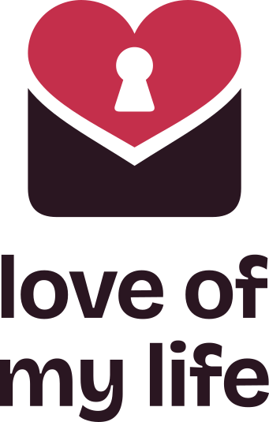

The idea: a heart with a keyhole, tucked into an envelope. It is a love letter that only one person can open. The gap under the heart is the envelope flap, the keyhole is the secret word, and the envelope and heart belong to Lettie.

Keep X free on every side. X is the height of the keyhole, a little over a quarter of the symbol's height. It applies to every version.
| Version | Screen | |
|---|---|---|
| Horizontal | 140 px wide | 35 mm wide |
| Stacked | 64 px wide | 18 mm wide |
| Symbol | 25 px and up | 7 mm and up |
| Small cut | 16–24 px | 4–7 mm |
At 16 px use web/icons/favicon-16.png, which is snapped to the pixel grid. Print sizes are starting points: proof them first.
love of my life
Bricolage Grotesque Bold (SIL Open Font License), lowercase, tightened, supplied as outlines. Never retype the logo.
In running text write the name as Love of My Life.
| Name | HEX | RGB | CMYK (approx.) | Use |
|---|---|---|---|---|
| Seal crimson | #c42f4b | 196 47 75 | 0 76 62 23 | Heart on light; buttons |
| Ink | #2a1621 | 42 22 33 | 0 48 21 84 | Pocket and words on light |
| Rose | #ee5b74 | 238 91 116 | 0 62 51 7 | Heart on dark only |
| Blush | #fbeef0 | 251 238 240 | 0 5 4 2 | Pocket and words on dark |
| Paper | #fffaf6 | 255 250 246 | 0 2 4 0 | Light background |
| Night | #170b14 | 23 11 20 | 0 52 13 91 | Dark background (icons: #2a1220 to #170b14) |
| Gilt | #f0cfa8 | 240 207 168 | 0 14 30 6 | Small accents on dark; never in the logo |
Contrast: crimson on paper 5.3:1, white on crimson 5.5:1, rose on night 5.8:1, ink on paper 16.4:1. CMYK values are calculated; no Pantone match has been chosen.